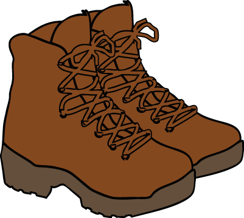
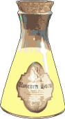
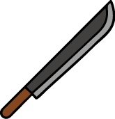
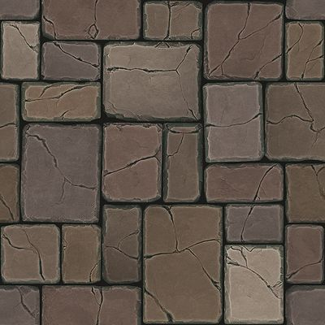
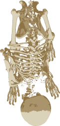

Credits
Back




(modified) made by fearian:
https://polycount.com/profile/discussions/fearian
(modified) made byLorc, Delapouite & contributors:
https://delapouite.com/
made by
Sergei Kokota
from
www.flaticon.com
(modified) made by
Garett LeFever
(modified) made by
Clker Free Vector Images
(modified) made by
Mysticsartdesign
(modified) made by
publicdomainpictures
(modified) made by
Freepik
from
www.flaticon.com
 (modified) made by
Kirill Tsukanov
from
Wikimedia.org
(modified) made by
Christian Schnettelker
from
Flickr.com
made by Marcus Daunert, aswell as all modifications
Mexican Jones muss aus dem
Tempel fliehen.
Doch das geht nur im
Landscape-Modus, da er sonst
in der Zeit feststeckt!
Drehe dein Gerät,
um ihn loslaufen zu lassen!
Restart